Chapter 3 The Completely Randomized Experiment and the Fisher Randomization Test
The potential outcomes framework has intrinsic connections with randomized experiments. Understanding causal inference in various randomized experiments is fundamental and helpful for understanding causal inference in more complicated non-experimental studies.
Part II of this book focuses on randomized experiments. This chapter focuses on the simplest experiment, the completely randomized experiment (CRE).
10 CRE
Consider an experiment with  units, with
units, with  receiving the treatment and
receiving the treatment and  receiving the control. We can define the CRE based on its treatment assignment mechanism6.
receiving the control. We can define the CRE based on its treatment assignment mechanism6.
Definition 3.1 (CRE)
Fix 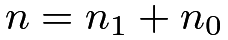 and with
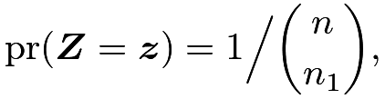 |
where 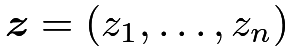 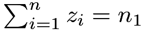 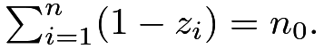
In Definition 3.1, we assume that the potential outcome vector under treatment
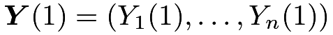
and the potential outcome vector under control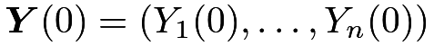
are both fixed. Even if we view them as random, we can condition on them and the treatment assignment mechanism becomes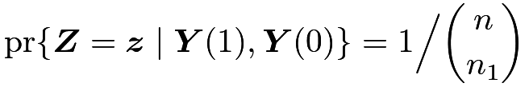 |
because
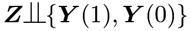
in a CRE. In a CRE, the treatment vector is from a random permutation of 1’s and 0’s.
is from a random permutation of 1’s and 0’s.
In his seminal book Design of Experiments, Fisher, (1935) pointed out the following advantages of randomization:
-
[(1)]
- 1.
It creates comparable treatment and control groups on average.
- 2.
It serves as a “reasoned basis” for statistical inference.
Point 1 is intuitive because the random treatment assignment does not bias toward the treatment or the control. Most people understand point 1 well. Point 2 is more subtle. What Fisher meant is that randomization justifies a statistical test, which is now called the Fisher Randomization Test (FRT). This chapter illustrates the basic idea of the FRT under a CRE.
11 FRT
Fisher, (1935) was interested in testing the following null hypothesis:7
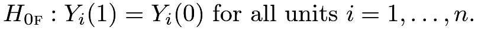 |
Rubin, (1980) called it the sharp null hypothesis in the sense that it can determine all the potential outcomes based on the observed data:
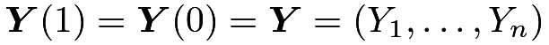
, the vector of the observed outcomes. It is also called the strong null hypothesis (Wu and Ding,, 2021, e.g.,).Conceptually, under  , the FRT works for any test statistic
, the FRT works for any test statistic
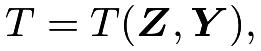 |
(7) |
which is a function of the observed data. The observed outcome vector  is fixed under , so the only random component in the test statistic
is fixed under , so the only random component in the test statistic  is the treatment vector . The experimenter determines the distribution of , which in turn determines the distribution of under . This is the basis for calculating the
is the treatment vector . The experimenter determines the distribution of , which in turn determines the distribution of under . This is the basis for calculating the  -value. I will give more details below.
-value. I will give more details below.
In a CRE, is uniform over the set
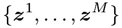 |
where  , and the
, and the  ’s are all possible vectors with
’s are all possible vectors with  ’s and
’s and  ’s.
For instance, with
’s.
For instance, with
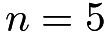
and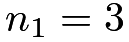
, we can enumerate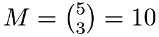
vectors as follows:As a consequence, is uniform over the set (with possible duplications)
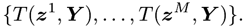 |
That is, the distribution of is known due to the design of the CRE. We will call this distribution of the randomization distribution.
If larger values are more extreme for , we can use the following tail probability to measure the extremeness of the test statistic with respect to its randomization distribution:8
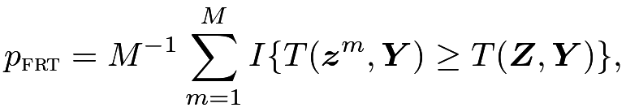 |
(8) |
which is called the -value by Fisher. Figure 3 illustrates the computational process of
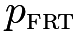
.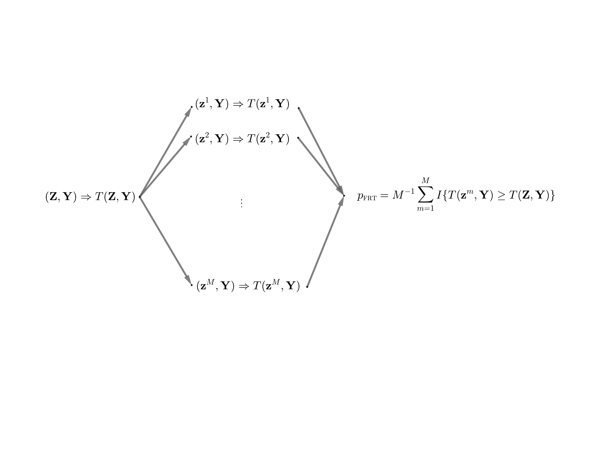
The -value, , in (8) works for any choice of test statistic and any outcome-generating process. It also extends naturally to any experiment, which will be a topic repeatedly discussed in the following chapters. Importantly, it is finite-sample exact in the sense9 that under ,
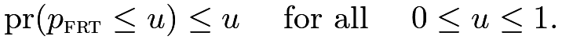 |
(9) |
In practice,  is often too large (e.g., with
is often too large (e.g., with
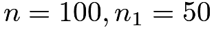
, we have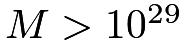
), and it is computationally infeasible to enumerate all possible values of the treatment vector. We often approximate by Monte Carlo (see Section 30.E for a review of the basic Monte Carlo method). To be more specific, we take independent random draws from all possible values of the treatment vector, or, equivalently, we randomly permute, and approximate by
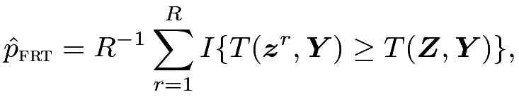 |
(10) |
where the
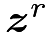
’s are the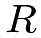
random permutations of.
The -value in (10) has Monte Carlo error decreasing fast with an increasing ; see Problem 3.2. Because the calculation of the -value in (10) involves permutations of , the FRT is sometimes called the permutation test in the context of the CRE. However, the idea of FRT is more general than the permutation test in more complex experiments.
12 Canonical choices of the test statistic
From the above discussion, the FRT generates finite-sample exact -value for any choice of the test statistic. This is a feature of the FRT. However, this feature should not encourage arbitrary choice of the test statistic. Intuitively, we must choose test statistics that give information for possible violations of . Below I will review some canonical choices.
Example 3.1 (difference-in-means)
The difference-in-means statistic is
 |
where
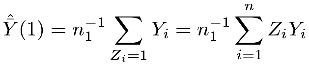 |
is the sample mean of the outcomes under the treatment and
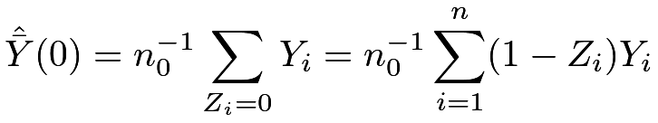 |
is the sample mean of the outcomes under the control, respectively.
Under , it has mean
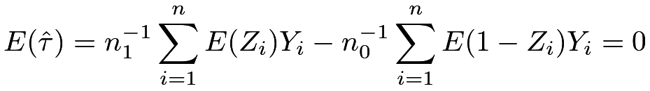 |
and variance
 |
 |
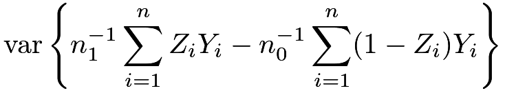 |
||
|
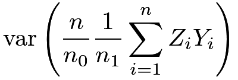 |
|||
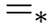 |
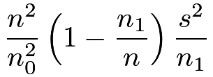 |
|||
|
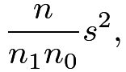 |
where  follows from Lemma 32.2 for simple random sampling with
follows from Lemma 32.2 for simple random sampling with
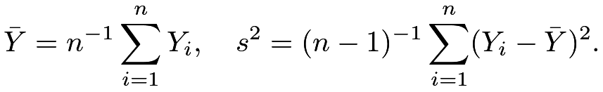 |
Furthermore, the randomization distribution of  is approximately Normal due to the finite population central limit theorem (CLT) in Lemma 32.4:
is approximately Normal due to the finite population central limit theorem (CLT) in Lemma 32.4:
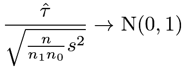 |
(11) |
in distribution. Since 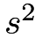, it is equivalent to use
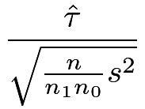 |
as the test statistic in the FRT, which is asymptotically  as shown in (11). Then we can calculate an approximate -value.
as shown in (11). Then we can calculate an approximate -value.
The observed data are  and
and  , so the problem is essentially a two-sample problem.
Under the assumption of independent and identically distributed (IID) Normal outcomes (see Section 30.D.1), the classic two-sample
, so the problem is essentially a two-sample problem.
Under the assumption of independent and identically distributed (IID) Normal outcomes (see Section 30.D.1), the classic two-sample  -test assuming equal variance is based on
-test assuming equal variance is based on
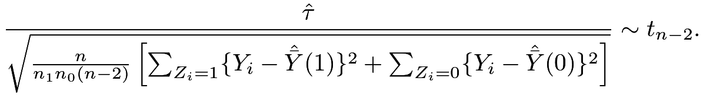 |
(12) |
Based on some algebra (see Problem 3.8), we have the expansion
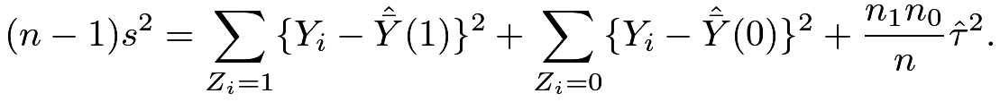 |
(13) |
With a large sample size , we can ignore the difference between and
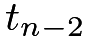
and the difference between and
and 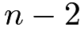
. Moreover, under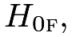
converges to zero in probability, so 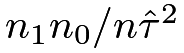
can be ignored asymptotically. Therefore, under the approximate-value in Example 3.1 is close to the -value from the classic two-sample -test assuming equal variance, which can be calculated by t.test with var.equal = TRUE. Under alternative hypotheses with nonzero  , the additional term
, the additional term 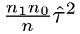
in the expansion (13) can make the FRT less powerful than the usual-test; Ding, (2016) made this point.
Based on the above discussion, the FRT with effectively uses a pooled variance ignoring the heteroskedasticity between these two groups. In classical statistics, the two-sample problem with heteroskedastic Normal outcomes is called the Behrens–Fisher problem (see Section 30.D.1). In the Behrens–Fisher problem, a standard choice of the test statistic is the studentized statistic below.
Example 3.2 (studentized statistic)
The studentized statistic10 is
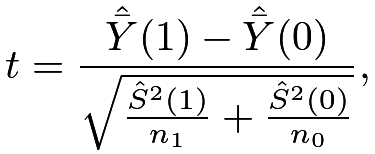 |
where
 |
are the sample variances of the observed outcomes under the treatment and control, respectively. Under , the finite population CLT again implies that is asymptotically Normal:
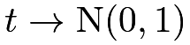 |
in distribution.
Then we can calculate an approximate -value which is close to the -value from t.test with var.equal = FALSE.
An extremely important point is that the FRT justifies the traditional -tests using t.test with either var.equal = TRUE or var.equal = FALSE, even if the underlying distributions are not Normal. Standard statistics textbooks motivate the -tests based on the Normality assumption, but the assumption can be too strong in practice. Fortunately, the -test procedures can still be used as long as the finite population CLTs hold. Even if we do not believe the CLTs, we can still use and as test statistics in the FRT to obtain finite-sample exact -values.
We will motivate this studentized statistic from another perspective in Chapter 8. The theory there shows that using in FRT is more robust to heteroskedasticity across the two groups.
The following test statistic is robust to outliers resulting from heavy-tailed outcome data.
Example 3.3 (Wilcoxon rank sum)
The difference-in-means statistic uses the sample means of the original outcomes, and its sampling distribution depends on the variances of the outcomes. The studentized statistic uses the sample means and variances of the original outcomes, and its sampling distribution depends on higher moments of the outcomes.
This makes and sensitive to outliers.
Another popular test statistic is based on the ranks of the pooled observed outcomes. Let  denote the rank of
denote the rank of  in the pooled samples :
in the pooled samples :
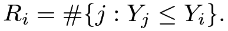 |
The Wilcoxon rank sum statistic is the sum of the ranks under treatment:
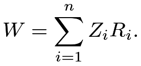 |
For algebraic simplicity, we assume that there are no ties in the outcomes.11
Because the sum of the ranks of the pooled samples is fixed at 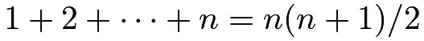, the ’s are fixed, so
has mean
and variance
|
||||
|
||||
|
||||
|
||||
|
where follows from Lemma 32.2.
Furthermore, under , the finite population CLT ensures that the randomization distribution of is approximately Normal:
| (14) |
in distribution.
Based on (14), we can conduct an asymptotic test. In R, the function wilcox.test can compute both exact and asymptotic -values based on the statistic . Based on some asymptotic analyses, Lehmann, (1975) showed that the FRT using has reasonable power over a wide range of data-generating processes.
Example 3.4 (Kolmogorov–Smirnov statistic)
The treatment may affect the outcome in different ways. It seems natural to summarize the treatment outcomes and control outcomes based on the empirical distributions:
Comparing these two empirical distributions yields the famous Kolmogorov–Smirnov statistic
It is a challenging mathematics problem to derive the distribution of . With large sample sizes  and , its distribution function converges to
and , its distribution function converges to
based on which we calculate an asymptotic -value (Van der Vaart,, 2000). In R, the function ks.test can compute both exact and asymptotic -values.
13 A case study of the LaLonde experimental data
I use LaLonde, (1986)’s experimental data to illustrate the FRT. The data are available in the Matching package (Sekhon,, 2011):
In the above, z denotes the binary treatment vector indicating whether a unit was randomly assigned to the job training program or not, and y is the outcome vector representing a unit’s real earnings in 1978. Figure 4 shows the histograms of the outcomes under the treatment and control.
The following code computes the observed values of the test statistics using existing functions:
By randomly permuting the treatment vector, we can obtain the Monte Carlo approximation of the randomization distributions of the test statistics, stored in four vectors Tauhat, Student, Wilcox, and Ks.
The one-sided -values based on the FRT are all smaller than 0.05:
Without using Monte Carlo, we can also compute the asymptotic -values which are all smaller than 0.05:
The differences between the -values are due to the asymptotic approximations as well as the fact that the default choices for t.test and wilcox.test are two-sided tests. To make fair comparisons, we need to multiply the first three ’s by a factor of .
Figure 5 shows the histograms of the randomization distributions of four test statistics, as well as their corresponding observed values. For the first three test statistics, the Normal approximations work quite well even though the underlying outcome data distribution is far from Normal as shown in Figure 4. In general, a figure like Figure 5 can give clearer information for testing the sharp null hypothesis. Recently, Bind and Rubin, (2020) proposes, in the title of their paper, that “when possible, report a Fisher-exact -value and display its underlying null randomization distribution.” I agree.
14 Some history of randomized experiments and FRT
14.1 James Lind’s experiment
James Lind (1716—1794) was a Scottish doctor and a pioneer of naval hygiene in the Royal Navy. At his time, scurvy was a major cause of death among sailors. He conducted one of the earliest randomized experiments with clear documentation of the details and concluded that citrus fruits cured scurvy before the discovery of Vitamin C.
In Lind, (1753), he described the following randomized experiment with patients of scurvy assigned to groups. With some simplifications, the groups are:
-
[(1)]
- 1.
two received a quart of cider every day;
- 2.
two received twenty-five drops of sulfuric acid three times every day;
- 3.
two received two spoonfuls of vinegar three times every day;
- 4.
two received half a pint of seawater every day;
- 5.
two received two oranges and one lemon every day;
- 6.
two received a spicy paste plus a drink of barley water every day.
After six days, patients in the fifth group recovered, but patients in other groups did not. If we simplify the treatment as
and the outcome as
then we have a two-by-two table
| ||
|
This is the extremest possible two-by-two table we can observe under this experiment, and the data contain strong evidence for the positive effect of citrus fruits for curing scurvy. Statistically, how do we measure the strength of the evidence?
Following the logic of the FRT, if the treatment has no effect at all (under ), this extreme two-by-two table will occur with probability
which is the .
This seems a surprise under : we can easily reject at the level of
14.2 Lady tasting tea
Fisher, (1935) described the following famous experiment of Lady Tasting Tea.12 A lady claimed that she could tell the difference between the two ways of making milk tea: one with milk added first, and the other with tea added first. This might sound odd to most people. As a statistician, Fisher designed an experiment to test whether the lady could actually tell the difference between the two ways of making milk tea.
He made cups of tea, with milk added first and the other with tea added first. Then he presented these cups of tea in a random order to the lady and asked the lady to pick up the with milk added first. The final experiment result can be summarized in the following two-by-two table:
| milk first (lady) | tea first (lady) | column sum | |
|---|---|---|---|
| milk first (Fisher) |  |
4 | |
| tea first (Fisher) | |
4 | |
| row sum | 4 | 4 | 8 |
The can be . In the real experiment, , which is the most extreme data, strongly suggesting that the lady could tell the difference between the two ways of making milk tea. Again, how do we measure the strength of the evidence?
Under the null hypothesis that the lady could not tell the difference, only one of the possible orders yields the two-by-two table with . So the -value is
Given the significance level of  , we reject the null hypothesis.
, we reject the null hypothesis.
14.3 Two Fisherian principles for experiments
In the above two examples in Sections 14.1 and 14.2, the ’s are justified by the randomization of the experiments. This highlights the first Fisherian principle of experiments: randomization.
Moreover, the above two experiments are in some sense the smallest possible experiments that can yield statistically meaningful results. For instance, if Lind only assigned one patient to each of the six groups, then the smallest -value is
if Fisher only made cups of tea, with milk added first and the other with tea added first, then the smallest -value is
We can never reject the null hypotheses at the level of . This highlights the second Fisherian principle of experiments: replications. This is, to ensure the FRT to have power, we must have enough units in experiments.
Chapter 5 will discuss the third Fisherian principle of experiments: blocking.
15 Discussion
15.1 Other sharp null hypotheses and confidence intervals
I focus on the sharp null hypothesis above. In fact, the logic of the FRT also works for other sharp null hypotheses. For instance, we can test
for a known vector . Because the individual causal effects are all known under , we can impute all missing potential outcomes based on the observed data. With known potential outcomes, the distribution of any test statistic is completely determined by the treatment assignment mechanism, and therefore, we can compute the corresponding as a function of , denoted by . If we can specify all possible ’s, then we can compute a series of ’s. By duality of hypothesis testing and confidence set (see Section 30.B.5), we can obtain a  -level confidence set for the average causal effect:
-level confidence set for the average causal effect:
Although this strategy is conceptually straightforward, it has practical complexities due to the large number of all possible ’s. In the special case of a binary outcome, Rigdon and Hudgens, (2015) and Li and Ding, (2016) proposed some computationally feasible approaches to constructing confidence intervals for based on the FRT. For general unbounded outcomes, this strategy is often computationally infeasible.
A canonical simplification (Rosenbaum, 2002b, ; Rosenbaum,, 2010) is to consider a subclass of the sharp null hypotheses with constant individual causal effects:
for a known constant  . Given , we can compute . By duality, we can obtain
a -level confidence set for the average causal effect:
. Given , we can compute . By duality, we can obtain
a -level confidence set for the average causal effect:
Because this procedure only involves a one-dimensional search, it is computationally feasible.
However, the constant individual causal effect assumption is too strong. In particular, it does not hold for binary outcomes unless all units have effects  , or . In general, the constant individual causal effect assumption has testable implications that can be rejected by the observed data; Ding et al., (2016) proposed a formal statistical test.
, or . In general, the constant individual causal effect assumption has testable implications that can be rejected by the observed data; Ding et al., (2016) proposed a formal statistical test.
15.2 Other test statistics
The FRT is a general strategy because it is applicable in any randomized experiment with any test statistic.
I have given several examples of test statistics in Section 12. In fact, the definition of a test statistic can be much more general. For instance, with pre-treatment covariate matrix with the  th row being
th row being  for unit 13, we can allow the test statistic to be a function of the treatment vector, outcome vector, and the covariate matrix. Problem 3.6 gives an example.
for unit 13, we can allow the test statistic to be a function of the treatment vector, outcome vector, and the covariate matrix. Problem 3.6 gives an example.
15.3 Final remarks
For a general experiment, the probability distribution of is not uniform over all possible permutations of 1’s and 0’s. However, its distribution is completely known by the experimenter. Therefore, we can always simulate its distribution which in turn implies the distribution of any test statistic under the sharp null hypothesis. A finite-sample exact -value equals
where is average over the distribution of conditional on data. I will discuss other experiments in the subsequent chapters and I want to emphasize that the FRT works beyond the specific experiments discussed in this book.
The FRT works with any test statistic. However, this does not answer the practical question of how to choose a test statistic in the data analysis. If the goal is to find surprises with respect to the sharp null hypothesis, it is desirable to choose a test statistic that yields high power under alternative hypotheses. In general, no test statistic can dominate others in terms of power because power depends on the alternative hypothesis. The four test statistics in Section 12 are motivated by different alternative hypotheses. For instance, and are motivated by an alternative hypothesis with a nonzero average treatment effect; is motivated by an alternative hypothesis with a constant causal effect with heavy-tailed outcomes. Specifying a working alternative hypothesis is often helpful for constructing a test statistic although it does not have to be precise to guarantee the validity of the FRT. Problems 3.6 and 3.7 illustrate the idea of using a working alternative hypothesis or statistical model to construct test statistics.
16 Homework Problems
3.1 Exactness of
Prove (9).
3.2 Monte Carlo error of
Given data, is a fixed number while its Monte Carlo estimator in (10) is random. Show that
and
where the subscript “mc” signifies the randomness due to Monte Carlo, that is, is random because ’s are independent random draws from all possible values of .
Remark: is random because is random. But in this problem, we condition on data, so becomes a fixed number. is random because the ’s are random permutations of .
Problem 3.2 shows that is unbiased for over the Monte Carlo randomness and gives an upper bound on the variance of . Luo et al., (2021, Theorem 2) gives a more delicate bound on the Monte Carlo error.
3.3 A finite-sample valid Monte Carlo approximation of
Although is unbiased for by the result in Problem 3.2, it may not be a valid -value in the sense that for all due to Monte Carlo error with a finite . The following modified Monte Carlo approximation is always a finite-sample valid -value. Phipson and Smyth, (2010) pointed out this trick in the permutation test.
Define
where the ’s the random permutations of . Show that with an arbitrary , the Monte Carlo approximation is always a finite-sample valid -value in the sense that for all .
Remark: You can use the following two basic probability results to prove the claim in Problem 3.3.
Lemma 3.1
For two Binomial random variables and with , we have for all
Lemma 3.2
If and , then, marginally, is a uniform random variable over .
3.4 Fisher’s exact test
Consider a CRE with a binary outcome, with data summarized in the following two-by-two table:
| total | |||
|---|---|---|---|
 |
 |
| |
 |
 |
|
Under , show that any test statistic is a function of and other non-random fixed constants, and the exact distribution of is Hypergeometric. Specify the parameters for the Hypergeometric distribution.
Remark: Barnard, (1947) and Ding and Dasgupta, (2016) pointed out the equivalence of Fisher’s exact test (reviewed in Section 30.C.1) and the FRT under a CRE with a binary outcome.
3.5 More details for lady tasting tea
Recall the example in Section 14.2. Calculate for .
3.6 Covariate-adjusted FRT
This problem gives more details for Section 15.2.
Section 13 re-analyzed the LaLonde experimental data using the FRT with four test statistics. With additional covariates, the FRT can be more general with at least the following two additional strategies. Assume all potential outcomes and covariates are fixed numbers.
First, we can use test statistics based on residuals from the linear regression. Run a linear regression of the outcomes on the covariates, and obtain the residuals (i.e., view the residuals as the “pseudo outcomes”). Then define the four test statistics based on the residuals. Conduct the FRT using these four new test statistics. Report the corresponding -values.
Second, we can define the test statistic as the coefficient in the linear regression of the outcomes on the treatment and covariates. Conduct the FRT using this test statistic. Report the corresponding -value.
Why are the five -values from the above two strategies finite-sample exact? Justify them.
3.7 FRT with a generalized linear model
Use the same dataset as Problem 3.6 but change the outcome to a binary indicator for whether re78 is positive or not. Run logistic regression of the outcome on the treatment and covariates. Is the coefficient of the treatment significant and what is the -value? Calculate the -value from the FRT using the coefficient of the treatment as the test statistic.
3.8 An algebraic detail
Verify (13).
3.9 Recommended reading
Bind and Rubin, (2020) is a recent paper advocating the use of -values as well as the display of the corresponding randomization distributions in analyzing complex experiments.
脚注
6. Readers may think that a CRE has  ’s as independent and identically distributed (IID) Bernoulli random variables with probability , in which is a Binomial random variable. This is called the Bernoulli randomized experiment (BRE), which reduces to the CRE if we condition on .
I will give more details for the BRE in Problem 4.7 in Chapter 4.
’s as independent and identically distributed (IID) Bernoulli random variables with probability , in which is a Binomial random variable. This is called the Bernoulli randomized experiment (BRE), which reduces to the CRE if we condition on .
I will give more details for the BRE in Problem 4.7 in Chapter 4.
7. Actually, Fisher, (1935) did not use this form of since he did not use the notation of potential outcomes. This form was due to Rubin, (1980).
8. Because of this, the in (8) is one-sided. Sometimes, we may want to define two-sided -values. One possibility is to use the absolute value of if it is distributed around .
9. This is the standard definition of the -value in mathematical statistics. The inequality is often due to the discreteness of the test statistic, and when the equality holds, the -value is Uniform under the null hypothesis. Let be the distribution function of . Even though it is a step function, we assume that it is continuous and strictly increasing as if it is the distribution function of a continuous random variable taking values on the whole real line. So , and
The discreteness of does cause some technical issues in the proof, yielding an inequality instead of an equality. I leave the technical details to Problem 3.1.
under the null hypothesis. Let be the distribution function of . Even though it is a step function, we assume that it is continuous and strictly increasing as if it is the distribution function of a continuous random variable taking values on the whole real line. So , and
The discreteness of does cause some technical issues in the proof, yielding an inequality instead of an equality. I leave the technical details to Problem 3.1.
10. The notation is intentional because it is related to the distribution. But it should not be confused with the notation , which denotes the distribution with degrees of freedom .
11. The FRT can be applied regardless of the existence of ties. With ties, we can either add small random noises to the original outcomes or use the average ranks for the tied outcomes. For the case with ties, see Lehmann, (1975, Chapter 1 Section 4).
12. This later became the title of a book on the modern history of statistics by Salsburg, (2001).
13. In causal inference, we call a covariate if it is not affected by the treatment. That is, if the covariate has two potential outcomes and , then they must satisfy . Standard statistics books often do not distinguish the treatment and covariates because they often appear on the right-hand side of a regression model for the outcome. They are both called covariates in those statistical models. This book distinguishes the treatment and covariates because they play different roles in causal inference.